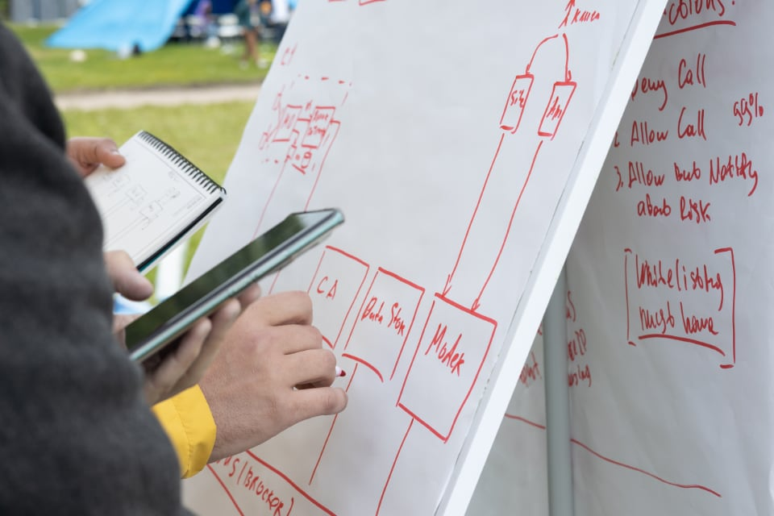

Организаторы
Мы верим, что укрепляя знания распределённых систем, мы сможем сделать сервисы для наших пользователей лучше.
Unit Lead в СберМаркете
Staff Engineer в СберМаркете

Отдельные благодарности Мирославу Малкину за вдохновение.
Это возможность в игровой форме потренировать свои архитектурные навыки на вымышленных проектах. Формат основан на Architectural katas — известной игре для разработчиков и архитекторов ПО.
Команды из 4-5 человек в течение трёх часов работают над одним проектом. Основная цель команд: оценить требования заказчика, найти пропущенные области и представить оптимальное архитектурное решение задачи.
В конце игры каждая из команд получит обратную связь от жюри.
Игра понравится разработчикам, аналитикам, менеджерам и начинающим архитекторам.
Ведущий делит участников на команды, участники знакомятся друг с другом, выбирают капитана, а затем приступают к решению задачи от заказчика.
Игровой процесс состоит из следующих этапов:
В конце всех выступлений жюри даёт обратную связь и определяют лучшее решение.
Мы верим, что укрепляя знания распределённых систем, мы сможем сделать сервисы для наших пользователей лучше.
Unit Lead в СберМаркете
Staff Engineer в СберМаркете
Отдельные благодарности Мирославу Малкину за вдохновение.
Подпишись на Telegram-канал, чтобы быть в курсе предстоящих игр в вашем городе.